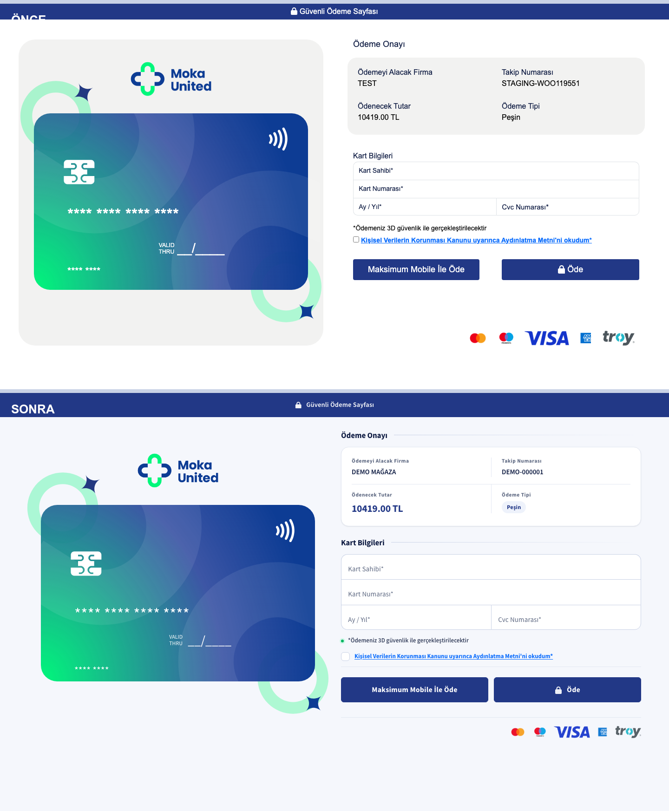

Masaüstü · 1440px

Neler değişti
- Üst bant tek düz renk
#223886; gradyan, ışık ve çizgi katmanları kaldırıldı. - Kart paneli sağ kolondaki “Ödeme Onayı” başlığıyla üstten ve alttan tam hizalı (fark 0px).
- Kart alanının zemini kaldırıldı; logo, kart ve köşe grafikleri doğrudan sayfa yüzeyinde.
- İki düğme de orijinal mavi
#223886ve orijinal 6px köşe yarıçapında. - KVKK bağlantısı standart mavi
#0d6efdve altı çizili; link olduğu anlaşılıyor. - Form alanları tek parça: Kart Sahibi → Kart Numarası arası 0px.
Neler değişmedi
- Kart ölçüsü 590×380 ve yarıçapı 35px.
- Çip 67×53, karta göre
top:100 left:64. - Kart numarası 34px, isim 21px, ay-yıl 28px.
- Köşe halkaları ve ışık desenleri: konum, ölçü ve renk aynı.
- Logo 200px + 24px boşluk.
- Markup:
id/class/name/ DOM sırası birebir aynı.